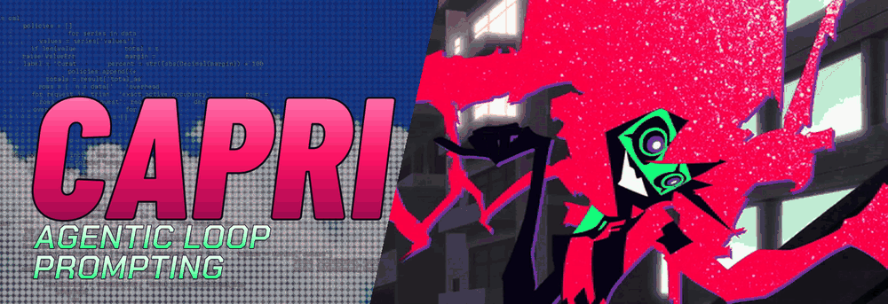

<!doctype html><html lang="en"><meta charset="utf-8"><meta name="viewport" content="width=device-width,initial-scale=1"><title>CAPRI — AGENTIC LOOPING hero</title><style>:root{color-scheme:light dark}body{margin:0;font:16px/1.5 system-ui}main{max-width:1000px;margin:24px auto;padding:0 16px}img,video{display:block;width:100%;height:auto}nav{display:flex;flex-wrap:wrap;gap:12px;margin:16px 0}button{font:inherit;padding:6px 12px}a{color:inherit}video{margin-top:12px}small{display:block;margin-top:12px}</style><main><h1>CAPRI — AGENTIC LOOPING</h1><picture id="encoded"><source media="(prefers-reduced-motion: reduce)" srcset="../hero.png"></picture><nav><button id="motion">Pause GIF</button><button id="replay">Replay GIF</button><a href="../../../README.md">Repository README</a><a href="../source-match/companion/index.html">Lesson companion</a></nav><small>Actual GitHub GIF above. The offline video below contains the same120 scene samples at nominal30fps; the GIF preserves the source’s exact30/40ms delays. Real source footage is restored; the existing lettering is retained over a transparent left field. The MP4 uses a dark preview matte; GIF/PNG/SVG retain alpha. No runtime/model result is depicted.</small><video id="master" controls loop muted playsinline preload="metadata" poster="../hero.png" src="master.mp4"></video></main><script>const im=document.getElementById('hero'),picture=document.getElementById('encoded'),button=document.getElementById('motion'),reduce=matchMedia('(prefers-reduced-motion:reduce)');let paused=reduce.matches;function pause(value){paused=value;picture.querySelector('source').srcset='../hero.png';picture.querySelector('source').media=value?'all':'not all';im.src=value?'../hero.png':'../hero.gif?play='+Date.now();button.textContent=value?'Play GIF':'Pause GIF';}button.onclick=()=>pause(!paused);document.getElementById('replay').onclick=()=>pause(false);reduce.addEventListener('change',()=>{pause(reduce.matches);if(reduce.matches)document.getElementById('master').pause();});if(reduce.matches)pause(true);</script></html>